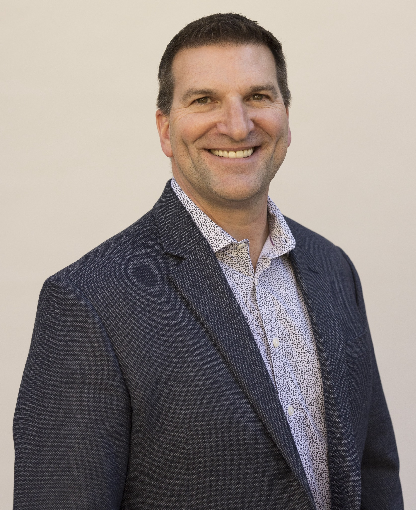

Ken Whah — Biography
Ken Whah is an experienced President and CEO with board and board-chairman service across for-profit and non-profit organizations, including service as Board Chairman of the Global Cold Chain Foundation. He brings 30 years of leadership across strategy, operations, culture, and growth.